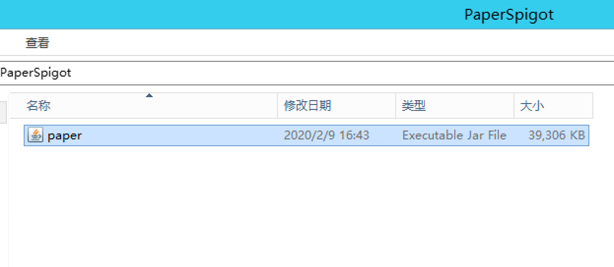
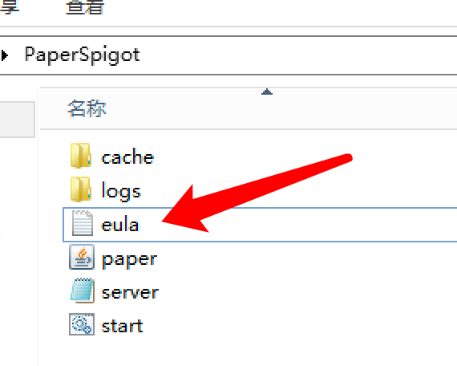
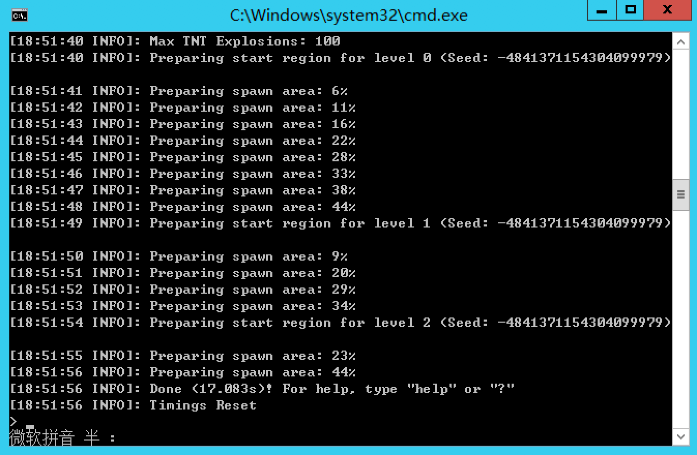
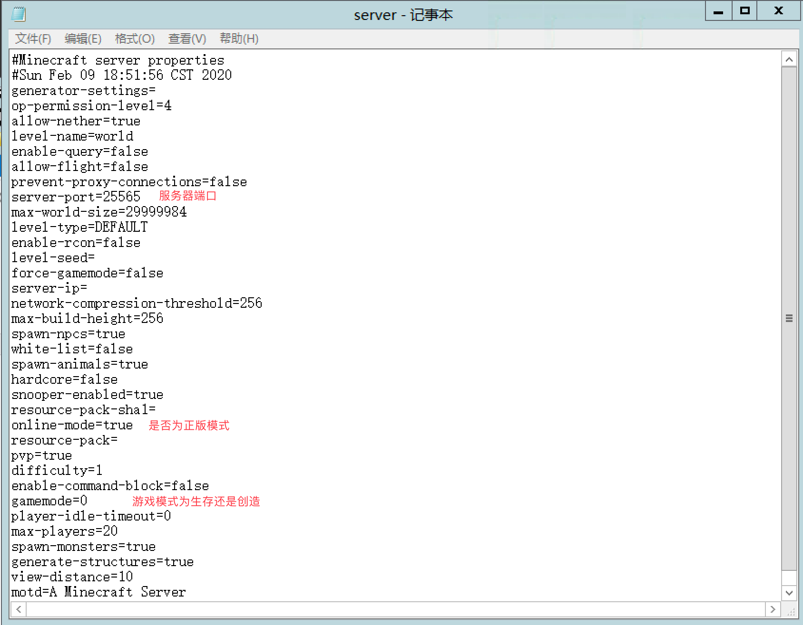
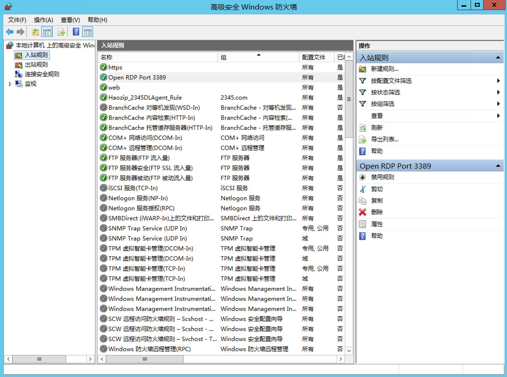
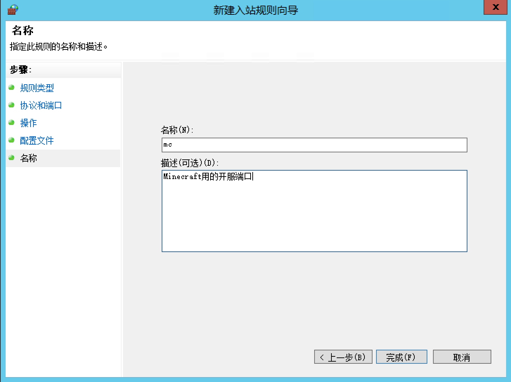

第一节 第一次的开服
1.选择一个合适的服务端核心
目前的服务端核心大概有这样几种：
| 核心名称 | 描述 | 指路 |
|---|---|---|
| 官方服务端 | 无法添加插件，安装forge后可以添加Mod | https://www.minecraft.net/ |
| Bukkit/CraftBukkit | 似乎是笔者印象中最为原始的插件服务端，并不支持添加Mod，但可以添加Bukkit插件 | https://www.getbukkit.org/ |
| Spigot | Spigot对Bukkit进行了优化，不支持添加Mod，但支持添加Bukkit插件 | https://hub.spigotmc.org/jenkins/job/BuildTools/ |
| Paper | Paper对Spigot进行了优化，不支持添加Mod，但支持添加Bukkit插件 | https://papermc.io/ |
| MCPC+/Cauldron | 可以安装Mod及Bukkit插件，但性能令人捉鸡。最高支持版本1.7.10 | https://sourceforge.net/projects/cauldron-unofficial/files/old_releases/version_1/ |
| KCauldron | 可以安装Mod及Bukkit插件，但最高支持版本仅到1.7.10 | https://sourceforge.net/projects/kcauldron/ |
| Thermos | KC的优化版本，最高支持版本1.7.10 | https://cyberdynecc.github.io/Thermos/install |
| Uranium | KC的优化版本，最高支持版本1.7.10 | https://www.uraniummc.cc/ |
| Catserver | 国人开发的1.12.2 Mod+Bukkit插件服务端 | https://github.com/Luohuayu/CatServer |
| Sponge Forge | 拥有自己的插件体系，在1.8及以上版本能做到Mod与Sponge插件的共同使用 | https://www.spongepowered.org/ |
| Sponge Vanilla | 支持Sponge插件但不支持Mod的轻型核心 | https://www.spongepowered.org/ |
| Glowstone | 一个完全开源的服务端，支持Bukkit插件。版本为1.12.2，中文介绍 https://www.mcbbs.net/thread-926208-1-1.html | https://www.glowstone.net/ |
您也可以通过以下网站快速便捷地找出您所需要的服务端核心
2.添加启动脚本并运行
这里我们选用 Paper 1.12.2 进行演示。
下载地址：https://papermc.io/
首先在我们的服务器上新建一个文件夹，建议纯英文路径。
将下载好的paper.jar扔进去。

在文件夹内创建一个 start.bat，使用 记事本 或 Notepad++ 打开。
输入最基本的启动脚本参数：
@ECHO OFF
java -Xmx1G -Xms1G -jar paper.jar
pause
保存并运行。
 >
找到文件夹中的 eula.txt 文件，将其中的 eula=false 改为 eula=true ;
重新启动 start.bat ;
我们发现服务器现在已经可以成功启动了。
 在终端窗口中输入 stop 停止运行。
在根目录中找到server.properties文件。
>
我们可以根据情况修改几个重要内容。
>

3.对服务器进行一些配置
- 在高级安全 Windows 防火墙开放刚刚在
server.properties中填写的端口（也可以选择直接关闭高级安全 Windows 防火墙，但有安全隐患，不推荐。）打开服务器管理器。
 找到工具->高级安全 Windows 防火墙->入站规则。
新建规则，选择端口。
下一步。
 TCP，特定本地端口，输入你想要开放的端口。
TCP，特定本地端口，输入你想要开放的端口。下一步。
允许连接。
 下一步怼到底。
至此，您应该能通过您服务器的 「IP地址:端口」 来连接您的服务器了。
P.S. 如果您使用的一些大型企业的公有云服务商（如阿里云）要求通过服务商自己的管理系统开放端口，那么仅仅是在入站规则中添加是不够的，这时您需要了解一下您服务商的具体情况。
4.一些建议
您当然可以选择通过他人整理好的整合包进行开服，但是笔者并不建议这种做法。因为自己从头到尾整合的服务端才是自己最了解的服务端，在自己整合的过程中看着自己的 plugins 和 mods 文件夹慢慢丰富起来，配置文件中的每一条配置自己都无比熟悉，没有什么比这感觉更好了（我自己是这样想的）。